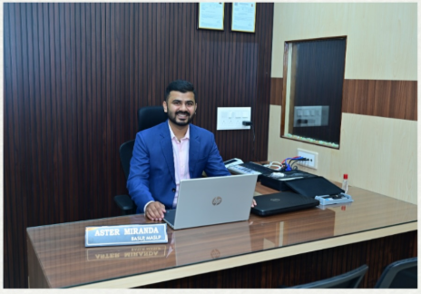

Your Audiologists &
Speech-Language Pathologists
Care led by qualified professionals — trusted by families across Mangaluru, Kadri, Urwa and Dakshina Kannada searching for a dependable audiologist near them.

Rithesh Gonsalves
M.Sc. AudiologyAudiologist & Speech-Language Pathologist
A dedicated audiologist and speech-language pathologist with over two years of experience in diagnosing, treating and enhancing communication abilities. His training spans esteemed institutions — MAPS College of Speech and Hearing, Father Muller College of Speech and Hearing, Anirvedha Foundation and Aanvii Hearing Solutions Pvt. Ltd. — with consulting experience across Bangalore, Tumkur, Hubli, Mumbai and Mangalore.
With hands-on expertise in hearing aid fitting and customisation, he delivers personalised hearing solutions that restore clarity and confidence. He also provides speech therapy for individuals with ADHD, receptive language disorders (RLD) and stroke-related speech impairments — empowering them to regain their voice and communication skills.

Aster F Miranda
M.A.S.L.PAudiologist & Speech-Language Pathologist
A seasoned audiologist and speech-language pathologist with extensive experience in treating hearing loss, balance disorders and neurogenic speech conditions, Aster has provided expert care to patients across top medical institutions and healthcare organisations.
An alumnus of Kasturba Medical College, Mangalore, and a postgraduate from the prestigious Madras ENT Research Foundation (MERF), Chennai — and a former consultant at Amplifon India Pvt. Ltd. — he specialises in advanced hearing aid fitting, cochlear implant adaptation and rehabilitation, and specialised speech therapy for neurological disorders. Known for his patient-centred approach, he combines cutting-edge techniques with compassionate care to enhance communication, hearing and overall quality of life.